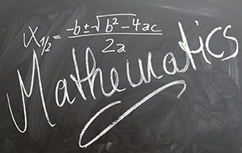
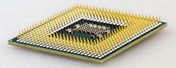
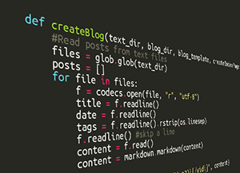
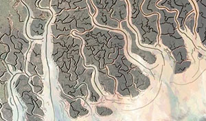

Bilgisayar mühendisliği dersleri ve kısa açıklamaları
March 14, 2015Merhabalar! Bu yazımda bilgisayar mühendisliğine ilgi duyan üniversite adaylarının en çok merak ettiği konulardan biri olan bilgisayar mühendisliği dersleri ve içeriklerine değineceğim. Aşağıdaki dersler ve kısa açıklamaları bilgisayar mühendisliği bölümünde sizi nelerin beklediğini görmeniz ve ilgi duyduğunuz alanları keşfetmeniz açısından faydalı olabilir.
Aşağıdaki listeyi eğitim gördüğüm üniversiteler olan Yıldız Teknik Üniversitesi, Boğaziçi Üniversitesi ve Texas-Austin Üniversitesinin ders programlarını baz alarak oluşturdum. Dersler üniversiteden üniversiteye farklılık gösterse de temel ders programı çoğu üniversitede aşağıdakine benzer olacaktır.
Genellikle Zorunlu Olan Dersler
Matematik Dersleri
 Bilgisayar mühendisliği ile ne alakası var matematiğin, ileride ne işime yarayacak bu dersler demeyin. Bilgisayar bilimlerinde herşeyin temeli matematik. Eğer düz programcı olarak piyasada çalışacaksanız bu derslerin bazılarına çok da ihtiyacınız olmayabilir ama özellikle araştırma kariyeri düşünüyorsanız sağlam bir matematik temelinizin olması son derece önemli.
- Genel Matematik (Calculus)
- Limit, türev, integral gibi konuları içeren temel matematik dersi.
- Diferansiyel Denklemler (Differential Equations)
- Bilgisayar bilimleri ile doğrudan ilgili olmasa da mühendisliğin temel derslerinden biri. Bu ders bölümünüzde seçmeli ise yerine numerik analiz dersini almayı düşünebilirsiniz.
- Nümerik Analiz (Numerical Analysis)
- Problemlerin numerik çözümleri ile ilgili genel bir kavrayış elde etmek için alınması gereken bir ders.
- Lineer Cebir (Linear Algebra)
- Oldukça temel bir ders. Özellikle bilgisayar grafiği alanına ilgi duyanlar için olmazsa olmaz diyebilirim. Lineer cebir bilgisinin kullanıldığı diğer bazı alanlar: video ve görüntü işleme, haberleşme, sinyal işleme, makina öğrenmesi ve yapay zeka olarak sıralanabilir.
- Ayrık Matematik (Discrete Mathematics)
- Algoritma analizi, graf teorisi, veri yapıları ve algoritmalar gibi konuların temelini oluşturan bir ders.
- Olasılık ve İstatistik (Probability and Statistics)
- Özellikle makine öğrenmesi ve veri madenciliği gibi konularda ilerlemeyi düşünenler için oldukça önemli bir ders.
Donanım Dersleri

- Genel Fizik (General Physics)
- Lise fiziğinin tekrarı/devamı diyebiliriz. Tam olarak donanım dersi olmasa da donanım dersleri ile ilgili sayılabilecek temel bir ders.
- Devre Teorisi (Circuit Theory)
- Elektrik devrelerinin temel elemanları ve analizini konu edinen bir alan.
- Elektronik Devreler (Electronic Circuits)
- Elektronik devre tasarımının temellerinin işlendiği bir ders.
- Mantıksal Devreler (Logic Circuits)
- Bilgisayarların temel blokları olan mantıksal devreleri konu alan, aynı zamanda bilgisayar mimarisi dersi için de temel oluşturan bir ders.
- Bilgisayar Organizasyonu ve Mimarisi (Computer Organization and Architecture)
- Bilgisayarların içinde cinlerin olduğuna dair batıl inançlarınızın tamamen yok olacağı, "bu bilgisayarlar nasıl çalışıyor?" sorusuna cevap bulacağınız bir ders.
- Bilgisayar Ağları ve Veri Haberleşmesi (Computer Networks and Data Communication)
- Bilgisayar ağlarının mimarileri ve haberleşme protokolleri gibi konuları kapsayan bir ders.
Yazılım Dersleri

- Programlamaya Giriş (Introduction to Programming)
- İlk programlama dersi. Çoğu üniversite C/C++ veya Java ile başlamayı tercih ediyor.
- Programlama Dilleri (Programming Languages)
- Programlama dillerinin genel kavramlarının işlendiği bir ders.
- Veri Yapıları ve Algoritmalar (Data Structures and Algorithms)
- Bölümün en temel derslerinden biri. Hedefiniz silikon vadisi ise her mülakatta bu derste öğrendiklerinize ihtiyacınız olacak. Temel konu başlıkarı: veri yapıları, sıralama algoritmaları, arama algoritmaları, açgözlü algoritmalar, ve algoritma analizi olarak sıralanabilir.
- İşletim Sistemleri (Operating Systems)
- Sistem yazılımı mimarileri, gömülü sistemlerin temelleri, dosya sistemi ve işlem yönetimi gibi konuları kapsayan temel bir ders. Silikon vadisi (özellikle Microsoft ve Google) mülakatlarının olmazsa olmazlarından.
- Veritabanı Sistemleri (Database Systems)
- Veritabanlarının temelleri, veritabanı yönetimi ve veritabanı uygulamaları geliştirmeyi konu alan bir ders.
- Nesne Yönelimli Programlama (Object Oriented Programming)
- Sınıf, nesne, arayüz, soyut veri tipleri, kalıtım ve yazılım kalitesi gibi nesne yönelimli programlamanın temellerinin işlendiği bir ders. Çoğu üniversite bu derste Java kullanmayı tercih ediyor.
- Yazılım Mühendisliği (Software Engineering)
- Yazılım geliştirme süreçleri ve proje yönetimi üzerine bir ders.
- Biçimsel Diller ve Özdevinirler Kuramı (Formal Languages and Automata Theory)
- Teori ağırlıklı bir ders. Derleyiciler dersini almayı düşünüyorsanız faydalı olabilir.
Genellikle Seçmeli Olan Dersler
Bölüm Dersleri

Temel konularda belirli bir altyapıya sahip olduktan sonra daha heyecan verici araştırma alanlarını keşfetmeniz için bölüm seçmeli dersleri güzel bir fırsat. Buradaki dersleri tek tek açıklamadım. Tavsiye ettiğim dersleri yazının devamında bulabilirsiniz.
- Makine Öğrenmesi (Machine Learning)
- Örüntü Tanıma (Pattern Recognition)
- Yapay Sınır Ağları (Artificial Neural Networks)
- Bilgisayarla Görü (Computer Vision)
- Görüntü ve Video İşleme (Image and Video Processing)
- Bilgisayarlı Fotoğrafçılık (Computational Photography)
- Bilgisayar Grafiği (Computer Graphics)
- İnsan-Bilgisayar Etkileşimi (Human Computer Interaction)
- Gömülü Sistemler (Embedded Systems)
- Gerçek Zamanlı Sistemler (Real-time Systems)
- Robotik (Robotics)
- Yapay Zeka (Artificial Intelligence)
- Veri Madenciliği (Data Mining)
- Bilgiye Erişim ve Arama Motorları (Information Retrieval)
- Doğal Dil İşleme (Natural Language Processing)
- Bilgi Kuramı (Information Theory)
- Bilgi Güvenliği ve Kriptografi (Information Security and Cryptography)
- Bulanık Mantık (Fuzzy Logic)
- Sayısal İşaret İşleme (Digital Signal Processing)
- Kablosuz Ağlar (Wireless Networks)
- Dağıtık ve Paralel Hesaplama (Distributed and Parallel Computing)
- Dosya Organizasyonu (File Organization)
- Mikroişlemciler (Microprocessors)
- Derleyiciler (Compilers)
Tavsiye ettigim bölüm seçmeli dersleri:
- Görsel bir insansanız: 4, 5, 6, 7
- Yapay zeka ve robotlara ilginiz varsa: 1, 2, 3, 4, 10, 11, 12, 15, 18
- Makine öğrenmesi alanında ilerlemeyi düşünüyorsanız: 1, 2, 3, 4, 12, 13
- Donanım ağırlıklı dersler ilginizi çekiyorsa: 9, 10, 20, 21, 23
- Arama motorlarını ilginizi çekiyorsa: 14, 13, 15, 16
- Sinyal işleme ile ilgiliyseniz: 19, 5
- Programlama dillerinin nasıl derlendiği ve yorumlandığını merak ediyorsanız: 24
- Bilgi güvenliği alanında ilerlemeyi düşünüyorsanız: 17
- Bilgisayar oyunları ile ilgiliyseniz: 7, 8
Diğer Bölümlerdeki İlgili Dersler

Tamamlayıcı seçmeli olarak almayı düşünebileceğiniz bazı dersler:
- Biyoinformatiğe Giriş (Introduction to Bioinformatics)
- Biyolojik bilgi kaynakları ve veri analizi ile ilgili bir ders. Veri madenciliği dersi ile birlikte alabilirsiniz.
- Bilişsel Bilimler (Cognitive Science)
- Zihin ve zeka üzerine çalışan disiplinlerarası bir araştırma alanı. Psikoloji, yapay zeka, felsefe ve dilbilim gibi bir çok farklı disiplinin kesişiminde yer alan bir alan.
- Sinirbilime Giriş (Introduction to Neuroscience)
- İnsan beyninin nasıl çalıştığı başta olmak üzere memelilerin sinir sistemlerini konu alan bir ders. Bilişsel bilimler, yapay sinir ağları ve makine öğrenmesi gibi derslerle birlikte alabilirsiniz.
- Zihin Felsefesi (Philosophy of Mind)
- Zihnin doğası hakkındaki felsefi problemlerin işlendiği bir ders. Yapay zeka ve bilişsel bilimler dersleri ile birlikte alabilirsiniz.
- Görü Sistemleri (Vision Systems)
- Görü sistemlerinin fizyolojisinin işlendiği, genellikle biyoloji ve psikoloji bölümleri tarafından açılan bir ders. Bilgisayarla görü ve görüntü işleme dersleri ile birlikte alabilirsiniz.
- İş Zekası (Business Intelligence)
- Veri madenciliği dersinin işletme versiyonu. Daha önce veri madenciliği dersini aldıysanız bu dersi almanızı tavsiye etmem. İşletme yüksek lisansı düşünüyorsanız alabilirsiniz.
- Uzaktan Algılamaya Giriş (Introduction to Remote Sensing)
- Bilgisayar mühendisliği ve harita mühendisliğinin kesişiminde yer alan bir ders. Uydu görüntüleri ilginizi çekiyorsa alabilirsiniz. Görüntü işleme dersi ile birlikte almanız faydalı olabilir.
Bölüm Dışı Dersler
Bölüm dışı dersleri bu yazıda detaylı incelemeye gerek duymadım. Aşağıda listelediğim bölüm dışı derslerin bazıları zorunlu bazıları seçmeli olabilir.
- Genel Kimya
- Genel Biyoloji
- Akademik İngilizce
- Türkçe
- İnkılap Tarihi
- Toplumsal Yapılar ve Tarihsel Dönüşümler
- Ekonomiye Giriş
- İşletmeye Giriş
- Felsefeye Giriş
- Bilim Felsefesi
- Yüzme
- Sosyal Dans
- ...
Daha önce de belirttiğim gibi açılan dersler üniversitelere göre farklılık gösterebilir. Tercih etmeyi düşündüğünüz üniversitelerin web sitelerinden ders programlarına bakabilir, ilgi duyduğunuz derslerin açılıp açılmadığını kontrol edebilirsiniz.
Şimdilik aklıma gelenler bunlar. Aşağıda yorum yaparak içeriğe katkıda bulunabilirsiniz. E-posta ile gönderilen sorulara cevap veremeyebiliyorum. Sorularınızı aşağıdaki yorumlar kısmından sorabilirsiniz. Yorumlarınıza en kısa sürede cevap vermeye çalışacağım.
Bilgisayar mühendisliği, En çok okunan yazılar